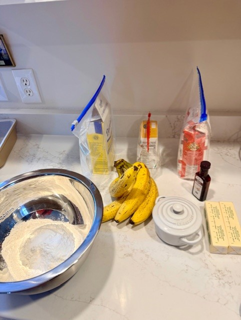
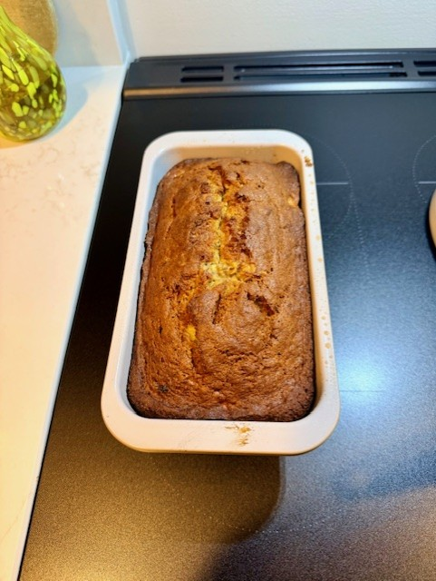

There’s just something magical about banana bread. One minute you’re staring at four sad, spotty bananas… the next, you’re a domestic icon pulling a golden loaf out of the oven like it’s your signature bake on a cooking show. This version keeps all the cozy nostalgia—just without the nuts, the drama, or the “did I overmix this” panic.
Here’s how to make it like a pro (or at least look like one).
🥣 Ingredients (In the Order You’ll Actually Use Them)
For the pan
- Coconut oil spray (or whatever non‑stick magic you trust)
Bananas + sugar
- 4 ripe bananas
- 2 mashed with a fork (chunky style)
- 2 for whipping into fluffy banana glory
- 1 cup sugar (or 1/3 cup if you’re pretending to cut back)
Wet ingredients
- 3/4 cup melted butter
- 2 large eggs
- 1 tsp vanilla extract
Dry ingredients
- 1 1/2 tsp baking soda
- 1/2 tsp salt
- 2 cups double zero flour
Optional (still nut free, still fabulous)
- 1/2 cup chocolate chips
- 1/2 cup dried fruit
- 1 tsp cinnamon
👩🍳 How to Make It (AKA: How to Become Everyone’s Favorite Person)
- Preheat your oven to 350°F and grease a 9×5 loaf pan. Coconut spray adds a little flavor. If coconut isn’t your thing, use whatever makes your heart happy.
- Mash two bananas with a fork. Leave them chunky—texture is personality.
- In a mixer with a whisk attachment, whip the other two bananas + sugar until it looks like banana mousse and you briefly consider eating it with a spoon.
- Add melted butter, eggs, and vanilla. Mix well. Scrape the bowl like you mean it.
- Add baking soda, salt, and flour. Mix gently—this is banana bread, not CrossFit. Fold in the mashed bananas and any optional add‑ins.
- Pour the batter into your pan and give it a little tap on the counter to pop air bubbles. (Also great for releasing any lingering stress.)
- Bake for 1 hour 15 minutes, or until a toothpick comes out clean. If it cracks on top, congratulations—you made a real banana bread. Cracks are character.
- Cool in the pan for 10 minutes, then move to a rack to finish cooling… or slice early and burn your fingers like the rest of us.

🍽️ Enjoy!
Perfect warm, toasted with butter, or eaten straight from the cutting board while pretending you’ll “just have one slice.” It also freezes beautifully—assuming it survives long enough to make it there.
The full recipe lives in the Recipes section, linked below.